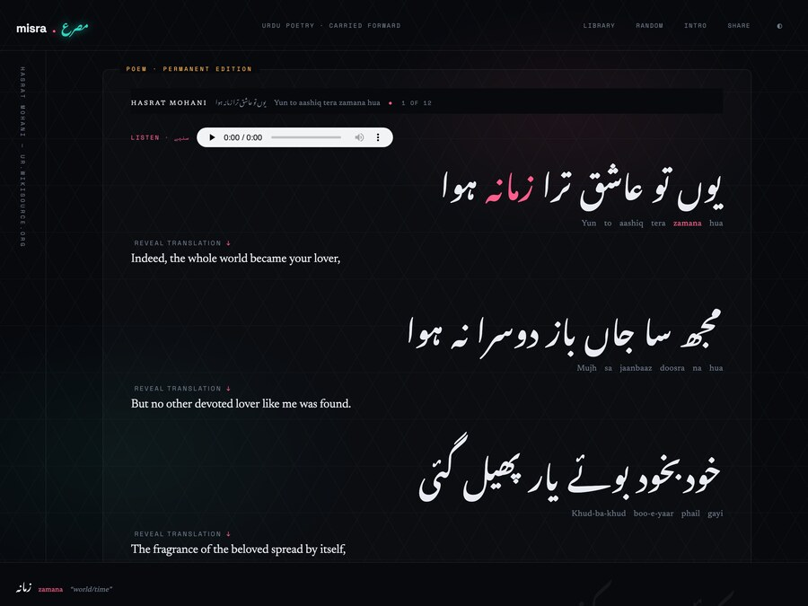
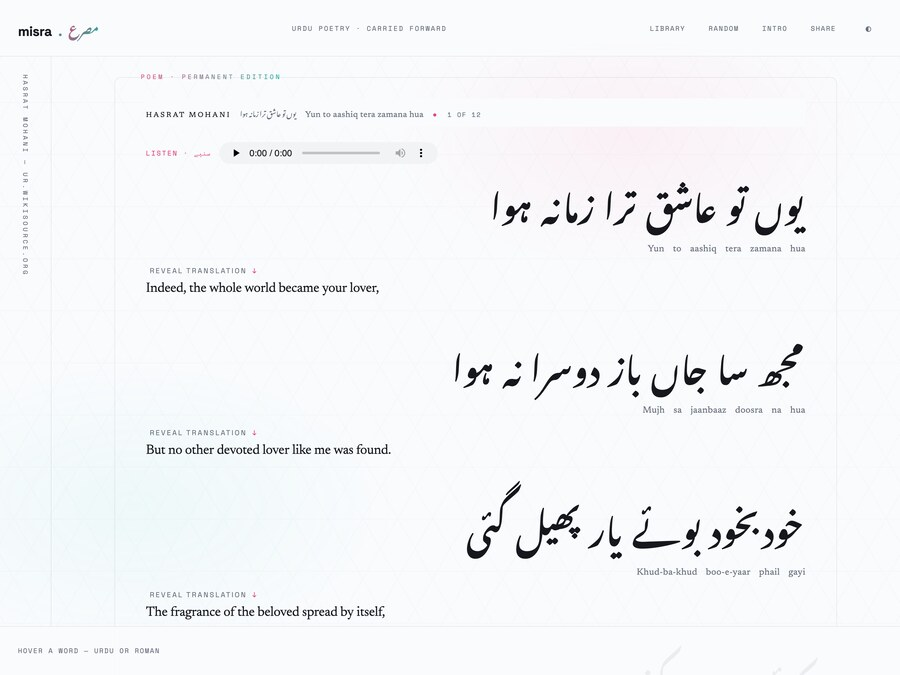
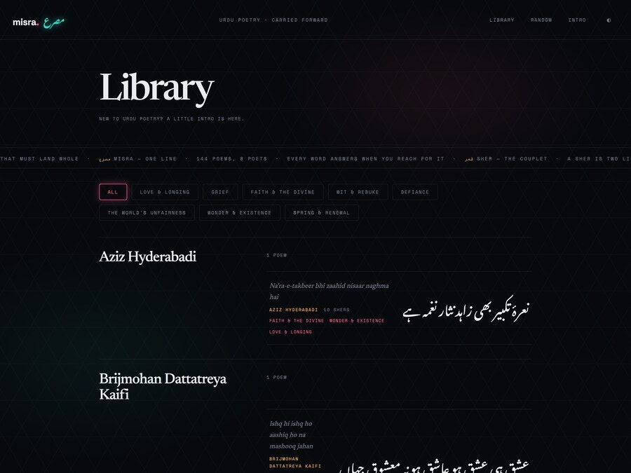
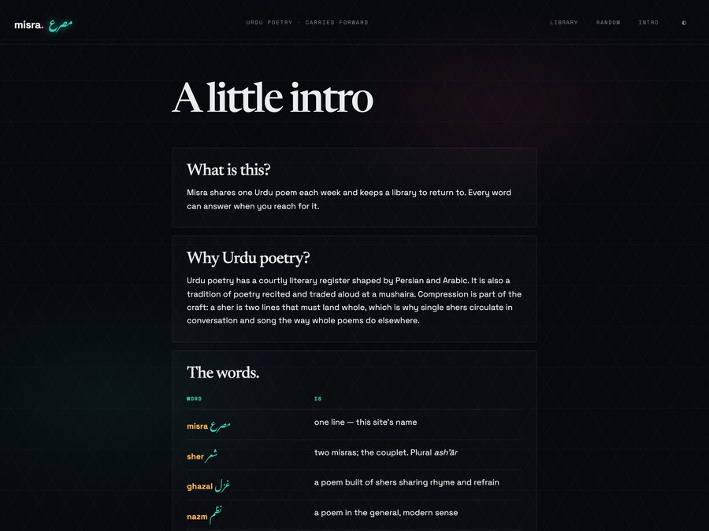

Misra — مصرع — is one line of a couplet. The site is one Urdu poem a week, sent by email and kept forever on the web, shown in Urdu script, Roman Urdu and natural English at the same time, with a meaning under every word that carries one.
I grew up hearing Urdu poetry and never learned to read it. That's an ordinary place to be if you're second-generation: the sound is familiar, the script isn't, and the meaning is a third thing again, because a classical sher is compressed on purpose — Persian idiom, an old courtly register, a metaphor doing four jobs at once. The usual fix is a translation, and a translation quietly throws away the two things you actually wanted: the sound and the shape.
So Misra refuses to pick. Every poem is stored and rendered as three separate layers — the original Urdu in Nastaliq, the Roman Urdu transliteration, and a plain English reading — and none of them is derived from another at render time. You read the script, you hear the line in your head off the Roman, and the English is one click away when you want it, not sitting on top of the poem by default.
Then the layer that makes it useful: hover any word, in either script, and the gloss bar at the foot of the screen names it and gives its meaning — while its twin in the other script lights up at the same time. That cross-script pairing is the whole product, and it is also the part that fought back hardest. More on that below.
The library is 144 poems from eight poets — Ghalib, Iqbal and Mir carry all but a handful — pulled from Urdu Wikisource, where the text is public domain and the source URL is a real, citable thing. You can browse it by mood rather than by name: love & longing, grief, faith & the divine, wit & rebuke, defiance. Every poem has a recitation. One is featured each week, and everyone gets the same one.




Urdu is rtl, Roman Urdu is Urdu written in Latin letters and reads ltr, and each is stored in its own field. A Roman line rendered right-to-left is a bug — and it's the one the first design shipped.
A text-to-speech model reads each poem in the measured cadence of shayari khwaani — a beat at the end of every misra, weight on the rhyme. Implausibly short audio is detected and regenerated couplet by couplet, then stitched with a quarter-second of silence.
It transliterates, translates and explains text that came from a named source with a real URL. An invented poet or a guessed provenance is a defect, not content — and unknown is a legitimate answer that displays as nothing at all.
Here's the bug I did not see coming. A gloss knows which word it belongs to by counting Urdu tokens. The Roman line was handing out those same glosses by counting its own tokens. The two scripts do not agree on what a word is: یارب is one written word and two Roman ones; an izafat chain the Roman joins with hyphens — khanda-e-zere-lab — is three separate words in the script. One disagreement skews every pairing after it.
Matching by content instead of position fixed the premise and exposed three more layers underneath, each found by listing exactly which glosses still detached rather than by theorizing about it. The transliteration and the glosses come from two different model calls, and they don't spell alike: hazāroñ against hazaron — so decompose the diacritics before stripping them, or the vowel leaves with its macron. Then they romanize by different conventions — gham/gam, chahiye/chahie, w/v — so both sides fold to one canonical spelling, and the fold has to run to a fixpoint because kuchh needs two passes. Measured on the poem I reported it on: 13 of 36 glosses attached, then 25, then all but one. The one is sahib against Sahab, a genuine spelling difference, and it stays dark rather than guessing — a word that doesn't answer is better than a word that answers wrongly.
The other thing I'd tell myself: I got the design wrong first and only knew it when I saw it live. The first shipped reading screen was competent and read to me as 1980s budget design — I said exactly that — and it took a full replacement of the palette, the faces and the type scale to get to the neon Nastaliq that's up now. I also had it paging through one couplet at a time, which is fine for a mock and wrong for a poem. A poem is a whole. That went in the bin too.
Misra went from an empty directory to a live site with a 144-poem library in about forty-eight hours, and almost none of that was me typing. The shape is the thing I keep reusing: a spec that says what the app does, a roadmap that is a strict queue, and a brief per item that stands entirely alone.
Signup and unsubscribe are live. The weekly email exists — one couplet in three scripts, the poem card travelling inline as an attachment rather than a linked image, because a proxy that fetches at open time will happily cache a failure and keep it. What is not built yet is the part that loops over real subscribers: the send loop, the bounce and complaint suppression, and the weekly timer. That's deliberate. Mailing the list twice cannot be undone. Every path that sends has to check the week's issue status and claim it atomically first, and that is the one chunk where a held gate is worth however many review passes it takes. A redeploy fixes a bad page; nothing fixes a duplicate send.
The entire persistence story is SQLite files on one volume, replicated continuously to object storage. Which is lovely, until you notice the job queue is also SQLite and polls itself every second — so the replicator was shipping a write-ahead-log segment to Tigris once a second, forever, buying nothing, and quietly burning the shared CPU's burst credits until the whole site crawled. The queue database left replication, polling dropped to ten seconds. Then the fix bit back: the boot script still asked the replicator to restore a database it no longer knew about, which exits non-zero, which under set -e crash-looped any fresh machine with an empty volume. Small app, real operations.